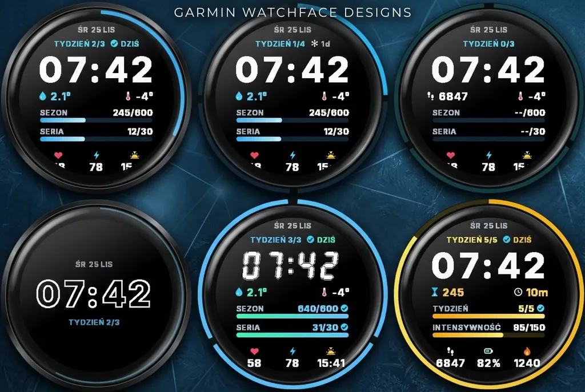
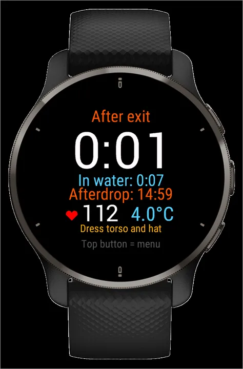

Prieš / vandenyje / po
Viršutinis mygtukas keičia etapus. Laikas vandenyje tiesiog skaičiuojamas toliau — programa niekada nesako išeiti. Sprendžiate jūs. Paskutinis laikas – tik atskaitos taškas, ne tikslas, kurį reikia įveikti.
Šaltos maudynės ir žiemos plaukimas, įrašomi tinkamai — ne kaip plaukimas.
5.0 „Connect IQ“ · 1000+ atsisiuntimų
Arba ieškokite „Cold Dip“ telefono „Connect IQ“ programoje.


Platformos
Cold Dip jau veikia „Garmin“ laikrodžiuose. „Amazfit“ (Zepp OS) versija peržiūrima „Zepp App Store“. Versijos „Huawei“, „Wear OS“ ir „Apple Watch“ – rengiamos.
Sukurta maudynėms, ne baseino treniruotei. Visą laiką sprendžiate jūs.
Viršutinis mygtukas keičia etapus. Laikas vandenyje tiesiog skaičiuojamas toliau — programa niekada nesako išeiti. Sprendžiate jūs. Paskutinis laikas – tik atskaitos taškas, ne tikslas, kurį reikia įveikti.
Pulsas fiksuojamas visą laiką. Vandens temperatūrą įvedate ranka ir ji išsaugoma su veikla.
Oro temperatūra, jaučiama temperatūra ir vėjas — iš „Garmin“ orų telefone.
Maudynių vieta išsaugoma ir rodoma žemėlapyje „Garmin Connect“.
Po kiekvienų maudynių – greitas savijautos įvertinimas. Taip pat pulso viršūnė ir atsistatymas bei Body Battery ir stresas prieš įeinant.
Viskas „Garmin Connect“ išsaugoma kaip atskira veikla, ne kaip plaukimas.
Anglų, lenkų, vokiečių, čekų, slovakų, suomių, norvegų, švedų, ispanų, rusų, ukrainiečių, danų, prancūzų, olandų, vengrų, italų ir lietuvių. Programa automatiškai seka laikrodžio kalbą.
Forerunner, Fenix, Epix, Enduro, Venu, Vivoactive, Instinct 2 / 3 / E / Crossover ir daugiau. Nepalaikoma: labai seni laikrodžiai, pvz. Forerunner 920XT (Connect IQ 1.x).
Pasirenkami priedai nemokamai programai — mokate tik tada, jei jų norite
Programa, kuria jau naudojatės, lieka nemokama. „Pro“ skirta tiems, kurie iš sezono nori šiek tiek daugiau: naujų treniruočių būdų, aiškesnio pažangos vaizdo ir paprastesnio ekrano vandenyje.
$4.99 vienkartinis, plius PVM ten, kur privaloma · 7 dienų nemokamas bandymas
Išbandykite „Pro“ 7 dienas nemokamai — tada 4,99 USD Atsisiųskite naujinimą „Connect IQ“
Darykite sauną su laikrodžiu ant riešo, imkite šaltą dušą, sekite vedamą saunos ir vandens kontrastą arba trumpai pasiruoškite kvėpavimu prieš įeidami. Fazės keitimą visada patvirtinate mygtuku.
Įvardyti etapai ir signalai jūsų pasirinktu laiku, be nemokamų minutės, pusiaukelės ir 3-2-1 signalų, kurie lieka kaip buvę.
Bendras laikas vandenyje ir saunoje, visų laikų ir sezono rekordai (šalčiausias vanduo, ilgiausios maudynės) ir istorija iki 200 sesijų. Nemokamas sąrašas vis dar rodo paskutines 30.
Laikykite 7, 14 ar 30 dienų seriją ir gaukite ženklelius už 10, 25, 50 ir 100 sesijų, pirmąsias maudynes žemiau 5°C, kontrasto sesiją ir sauną su maudynėmis iš eilės.
Didelis laikmatis, pulso ir raundų puslapis ir temos (ledas, tamsi, didelis kontrastas, sauna). Puslapį keiskite Aukštyn ir Žemyn.
Didžiulis laikmatis vandenyje, vandens temperatūra ir pulsas. Vienas mygtukas pradėti ir stabdyti. Jokių papildomų meniu ar ekranų. Įjunkite nuostatose, kai atrakinsite „Pro“.
Siūlomas laikas pagal vandens temperatūrą, pagal įprastą klubo taisyklę (maždaug tiek minučių, kiek vanduo turi °C, nuo 0:30 iki 5:00). Tai tik užuomina: programa niekada neužbaigia sesijos ir niekada nesako, kad laikas saugus.
Naujesniuose laikrodžiuose galite prisegti „glance“ ir komplikacijas: dienos seriją, paskutinių maudynių laiką ir sezono minutes. „Glance“ tuose laikrodžiuose nemokama. Komplikacijoms reikia ciferblato, kuris palaiko programų komplikacijas.
Išsaugojus maudynes, paprasta kortelė rodo laiką, temperatūrą, savijautą ir seriją. Nufotografuokite ekraną, jei norite pasidalinti. Istorijos sąrašas lieka laikrodyje, o „Garmin Connect“ vis tiek gauna FIT veiklą. Nėra debesies eksporto ar „Instagram“ paveikslėlio — „Connect IQ“ pati nuotraukų siųsti negali.
Po maudynių matote paprastą pulso kreivę, viršūnę ir 1 bei 2 minučių atsistatymo reikšmes. Tai tik užuomina, ne medicininė konsultacija.
Išsaugokite maudynių vietą su paskutine ten užfiksuota vandens temperatūra. Kai esate netoliese, pradžios ekranas gali rodyti tą paskutinį apsilankymą. Tai ne gyva ežero temperatūra — „Connect IQ“ neturi vandens temperatūros API.
Jei laikrodį paliekate lauke, kad neperkaistų, įjunkite parinktį: programa saunoje nesitikės pulso nuo riešo ir po to galės pradėti šilimo etapą. Šilimą po maudynių galite pradėti ir iš meniu.
| Kas įeina | Nemokama | Pro ⭐ PRO |
|---|---|---|
| Viskas, kas jau yra Cold Dip 1.0.3 — keturi profiliai, 30 įrašų istorija, vedamas kvėpavimas, GPS ir daugiau | ✓ Taip | ✓ Taip |
| Sauna, kontrastas ir nauji režimai ⭐ PRO | — | ✓ Taip |
| Savi signalai vandenyje ⭐ PRO | — | ✓ Taip |
| Matykite visą sezoną ⭐ PRO | — | ✓ Taip |
| Visų laikų ir sezono rekordai — šalčiausias vanduo, ilgiausios maudynės ⭐ PRO | — | ✓ Taip |
| Ženkleliai ir dienų serijos ⭐ PRO | — | ✓ Taip |
| Papildomi ekranai ir spalvų temos ⭐ PRO | — | ✓ Taip |
| Paprastas režimas, tinka su pirštinėmis ⭐ PRO | — | ✓ Taip |
| Laiko užuomina — ne riba ⭐ PRO | — | ✓ Taip |
| „Glance“ ir ciferblato komplikacijos (naujesni laikrodžiai) | Naujesniuose laikrodžiuose | Naujesniuose laikrodžiuose |
| Sesijos kortelė ir istorijos sąrašas ⭐ PRO | — | ✓ Taip |
| Pulso ir atsistatymo diagrama ⭐ PRO | — | ✓ Taip |
| Išsaugotos vietos su paskutine vandens temperatūra ⭐ PRO | — | ✓ Taip |
| Laikrodis už saunos ir šilimas ⭐ PRO | — | ✓ Taip |
| Kaina | Nemokama | 7 dienų bandymas, tada vieną kartą 4,99 USD |
„Pro“ veikia naujesniuose „Garmin“ laikrodžiuose su „Connect IQ 4“ ar naujesne, įskaitant Venu 2 / 3 / 4, Venu Sq 2, Venu X1, vívoactive 5 / 6, Forerunner 165 / 170 / 255 / 265 / 570 / 955 / 965 / 970, fēnix 7 / 8 / 9, epix (Gen 2), Instinct 3 AMOLED, Descent Mk3, Enduro 3 / 4, Approach S50 / S70 / S72 ir MARQ (Gen 2) / (Gen 3). Neveikia senesniuose ar mažesnės atminties modeliuose, pvz. fēnix 5 / 6, pirmajame Venu, vívoactive 3 / 4, Forerunner 55 / 245 / 645 / 945, Instinct 2, Instinct 3 Solar ar Instinct E — nemokama programa ten vis dar veikia. Patikrinkite savo modelį sąraše.
„Garmin Connect“ saunos sesija išsaugoma kaip treniruotė arba meditacija, nes „Garmin“ neturi saunos veiklos tipo.
Laiko užuomina nėra medicininė konsultacija ir nereiškia, kad sesija saugi. Šaltas vanduo ir sauna kelia riziką. Pasitarkite su gydytoju, niekada neikite vieni ir vadovaukitės savo nuovoka. Visą laiką sprendžiate jūs.
Ieškokite savo modelio. Sąrašas atitinka 133 „Cold Dip“ laikrodžius.
Labai seni „Connect IQ 1.x“ laikrodžiai, pvz. Forerunner 920XT, nepalaikomi. „Pro“ reikia naujesnio laikrodžio — ieškokite savo modelio, ar jis įtrauktas.
Ciferblatai
Ciferblatai žiemos maudynėms, įskaitant sezoninius, kuriuos uždirbate maudynėmis Cold Dip. „Mors – tarcza“ keičiasi su orais. „Mors Level“ auga su sezono minutėmis. „Dip Goals“ ir „Afterdrop“ netrukus.
Sezonas 2026/2027
Jie nemokami — jų nusipirkti negalima. Atrakinami tik maudynėmis nemokamoje Cold Dip programoje.
15 maudynės per sezoną. Kodas MK.
50 maudynės per sezoną. Kodas MZ. Rinkitės Król arba Posejdon.
Be rango ciferblatas rodo tik laiką ir datą. Kodas veikia tik jūsų laikrodyje.
Kaip atrakinti


Animuotas vėplio ciferblatas žiemos maudynėms
$3.99 24 valandų nemokamas bandymas
Netrukus „Connect IQ Store“ Gaukite „Connect IQ“ Daugiau
Žaidybinis vėplio ciferblatas šaltoms maudynėms
$2.99 7 dienų nemokamas bandymas
Netrukus „Connect IQ Store“ Gaukite „Connect IQ“ Daugiau

Tikslų žiedai savaitės maudynėms, sezono minutėms ir serijai, plius vandens ir oro temperatūra, Body Battery ir pulsas. Keturios temos.

Nemokamas „Garmin“ ciferblatas su dideliu laiku ir 3 duomenų laukais. Jis niekada neužsirakina. Pasirenkamas Afterdrop Pro atrakina Cold Dip laukus, oro temperatūrą, saulėtekį ir saulėlydį bei 4 papildomas temas.
Animuotas vėplio ciferblatas žiemos maudynėms
Vėplys reaguoja į orus: bangos geru oru, užsideda kepurę šaltyje, nusišoka sniegą ir šoka į eketę, kai laikas maudytis. Laikas, data, oro temperatūra, orai, pulsas, žingsniai ir baterija. Animacija rodoma pažadinus laikrodį — niekada always-on režimu.
$3.99 vienkartinis, plius PVM ten, kur privaloma
AMOLED laikrodžiuose vėplys juda pakėlus riešą — niekada always-on režimu.
Spalvota animacija AMOLED laikrodžiuose, pvz. Venu 2, 2 Plus, 3 ir 4, vívoactive 5 ir 6, Forerunner 165, 170, 265, 570, 965 ir 970, Fenix 8 ir 9 (AMOLED), Epix 2, Descent Mk3, D2 Mach, Approach S70 ir S72, Instinct 3 AMOLED ir MARQ 2 ir 3.
Šis ciferblatas neprieinamas MIP ar mažesnės atminties laikrodžiuose, pvz. Fenix 5 Plus, Fenix 6 ir 7, Fenix Solar, Forerunner 245, 255, 745, 945 ir 955, Enduro, Descent Mk2, vívoactive 4, Venu 1 ir pirmos kartos MARQ. Tie ekranai negali rodyti spalvotos animacijos.
Žaidybinis vėplio ciferblatas šaltoms maudynėms
Jūsų vėplio palydovas kyla per 5 etapus, augant sezono minutėms šaltame vandenyje — sinchronizuojama gyvai iš nemokamos Cold Dip programos. Rūkstanti eketė žiemą, paplūdimys vasarą, dienų serijos ženklelis, vandens temperatūra, pulsas, baterija ir švarus always-on ekranas. Pažadinimo animacija rodoma pažadinus laikrodį — niekada always-on režimu.
$2.99 vienkartinis, plius PVM ten, kur privaloma · 7 dienų nemokamas bandymas
Kad kiltumėte su gyvomis minutėmis, serija ir vandens temperatūra, įdiekite nemokamą Cold Dip programą. Be jos tie laukai tiesiog rodo laikrodžio duomenis.
NOVICE 1/5


5 levels
1/5
0–29 min šį sezoną
2/5
30–119 min šį sezoną
3/5
120–299 min šį sezoną
4/5
300–599 min šį sezoną
5/5
600+ min šį sezoną


Spalvota animacija 51 AMOLED laikrodžiuose, pvz. Venu 2, 2 Plus, 3 ir 4, vívoactive 5 ir 6, Forerunner 165, 170, 265, 570, 965 ir 970, Fenix 8 ir 9 (AMOLED), Epix 2, Descent Mk3, D2 Mach, Approach S70 ir S72, Instinct 3 AMOLED ir MARQ 2 ir 3. Always-on įjungia labai nedaug pikselių.
Aiškus, statinis ciferblatas 19 MIP laikrodžių, pvz. Fenix 7, Fenix 8 Solar, Forerunner 255 ir 955 bei Enduro 3 ir 4. Iš viso „Mors Level“ palaiko 70 „Garmin“ laikrodžių, 11 kalbų.
Vidutinis įvertinimas 5,0 ★ „Connect IQ Store“ ir 1000+ atsisiuntimų.
★★★★★
„Super, pierwsze morsowanie z apką za mną, działa! Tego mi było trzeba! Dzięki”
Super, pirmosios maudynės su programa įvyko, veikia! Būtent to ir reikėjo! Ačiū (Išversta iš lenkų kalbos)
★★★★★
„Rewelacyjna apka. Przetestowana podczas morsowania. Wszystko działa dobrze”
Puiki programa. Išbandyta žiemos maudynėse. Viskas veikia gerai (Išversta iš lenkų kalbos)
★★★★★
„Działa nawet na starszym Garminie za co duże brawa dla autora”
Veikia ir senesniame „Garmin“ — dideli plojimai kūrėjui (Išversta iš lenkų kalbos)
★★★★★
„Świetna sprawa!💙”
Puikus dalykas!💙 (Išversta iš lenkų kalbos)
Vienos maudynės nuo pradžios iki išsaugojimo — tikri ekranai iš „Garmin“ simuliatoriaus.



Naujausios Cold Dip versijos.
Rangai nemokami ir skirti tik smagumui — niekas su niekuo nevaržosi: Pingvinas (1), Ruonis (5, 7 „Pro“ dienos nemokamai), Partizanas vėplys (15, kodas ciferblatui „Mors Komandos 2026/2027“), Veteranas vėplys (30, −30 % „Mors Level“ / „Dip Goals“, kodai netrukus) ir Legendinis vėplys (50, kodas auksiniam ciferblatui pasirinktinai: „Mors Legenda Król 2026/2027“ arba „Mors Legenda Posejdon 2026/2027“). Skaičiuojamos daugiausiai vienerios maudynės per dieną (sezonas spal. 1 – bal. 30), o tik saunos sesija nesiskaito. Tai trys atskiri sezoniniai ciferblatai, netrukus „Connect IQ“ parduotuvėje, diegiami nemokamai: uždirbkite juos rangu Cold Dip. Jie neįeina į 5,99 / 7,99 USD rinkinius, o nauji ciferblatai ateina kiekvieną sezoną.
Visi rekordai — šalčiausias vanduo ir ilgiausios maudynės, visų laikų ir šį sezoną — dabar priklauso „Pro“. Jie visiems ir toliau saugomi, o nemokama programa rodo „Naujas rekordas! Žr. „Pro““. Po trečiųjų maudynių vieną kartą pasirodo prašymas įvertinti. Laiko matavimas, pulsas ir išsaugojimas į „Garmin Connect“ lieka nemokami. Senesniuose ir nespalvotuose laikrodžiuose be „Pro“ rekordai lieka nemokami.
Vandens temperatūrą dabar galima nustatyti žemiau 0°C.
Išėjus įvesta vandens temperatūra dabar taikoma tik tai sesijai. Užklausa nepaiso atsitiktinio mygtuko paspaudimo tuoj po išėjimo. Patikimiau: pilna atmintis ar išsaugojimo klaida nebeužšaldo programos, o nepalaikomas laukas ar sportas senesniame laikrodyje nebestabdo pradžios. Pataisyti lenkų ir rusų šilimo patarimai.
Pataisyta strigtis praėjus apie 20 sekundžių po sesijos išsaugojimo (pranešta Venu 3S). Išėjus laikrodis klausia vandens temperatūros; tai nemokama ir galima išjungti nuostatose.
Štai ir Cold Dip Pro. Viskas iš 1.0.3 lieka nemokama. „Pro“ pasirenkama: vienkartinis 4,99 USD atrakinimas su 7 dienų nemokamu bandymu. Nauji režimai: sauna, šaltas dušas, vedamas kontrastas ir kvėpavimo paruošimas; savi signalai ir įvardyti etapai vandenyje; sezono statistika, ženkleliai ir dienų serijos (7 / 14 / 30); papildomi ekranai, spalvų temos ir paprastas režimas.
133 laikrodžiai, įskaitant Instinct 2, Instinct 2S, Instinct 2X, Instinct 3 Solar, Instinct E ir Instinct Crossover, plius naujas juodai baltas išdėstymas MIP ekranams.
126 laikrodžiai, įskaitant Forerunner 55.
105 laikrodžiai, įskaitant stačiakampius išdėstymus Venu X1 ir Venu Sq 2.
Pirmasis leidimas.
“Działa idealnie” (Veikia puikiai)
Daugiau kaip 10 minučių maudynės 5°C — vandens temperatūra laikrodyje, ir visi duomenys išsaugoti „Garmin Connect“.
Keli dalykai, kurių žmonės dažnai klausia įdiegę.
Įdiekite iš telefono „Connect IQ Store“ programos — ne iš „Google Play“ ar „App Store“. Laikrodyje Cold Dip rasite veiklų / programų sąraše.
Profile „Eketė“ pradžios ekrane naudokite mygtukus − / +. Kituose profiliuose nustatykite iš meniu: „Rankinė vandens temp.“ Jei vandenyje matote „--°C“, temperatūra dar nenustatyta.
Atidarykite veiklą, eikite į skirtuką „Statistika“ ir slinkite iki skyriaus „Connect IQ“. Ten yra pulsas, vandens temperatūra, orai, savijauta ir etapų laikai. Apžvalgos langelių vaizdą nustato „Garmin“ — programa jų pakeisti negali.
Ne. Laikrodis negali matuoti kūno temperatūros. Jutiklis skaito paties laikrodžio temperatūrą, kurią veikia oda ir oras. Cold Dip vandens temperatūrą įvedate ranka.
Kalorijas laikrodis apytiksliai skaičiuoja iš pulso, ne Cold Dip.
Taip. Įrašymas vyksta laikrodyje, tad telefonas gali likti krepšyje. Be telefono prarandate tik orus, nes jie ateina iš „Garmin“ orų telefone. Veikla sinchronizuojama su „Garmin Connect“, kai laikrodis kitą kartą prisijungs prie telefono. Telefono reikia programai įdiegti ir „Pro“ atrakinti.
Laikrodis pats vandens temperatūros išmatuoti negali — įmontuotas jutiklis skaito laikrodį, kurį šildo oda ir oras. Cold Dip vandens temperatūrą nustatote − / + (arba meniu), o išėjus programa jos paklausia. Jei turite susietą „Garmin Tempe“ jutiklį, programa naudoja jo rodmenį. Laikrodžio jutiklis ir oro temperatūra niekada nepateikiami kaip vandens temperatūra.
„Pro“ yra pasirenkama, o programa lieka nemokama. „Pro“ prideda sauną, šaltą dušą, vedamą kontrastą ir kvėpavimo paruošimą, savus signalus, sezono statistiką, visų laikų ir sezono rekordus (šalčiausias vanduo, ilgiausios maudynės), ženklelius ir dienų serijas, papildomus ekranus ir temas, pirštinėms tinkamą paprastą režimą, laiko užuominą pagal vandens temperatūrą (užuomina, niekada ne riba) ir pulso diagramą. Kaina – vienkartiniai 4,99 USD po 7 dienų nemokamo bandymo. Visos „Pro“ funkcijos.
Mokėjimai eina per KiezelPay. Kai norite pasilikti „Pro“, laikrodis rodo 6 skaitmenų kodą. Įveskite jį kzl.io/cold-dip-pro (mokamiems ciferblatams: kzl.io/code) ir sumokėkite vieną kartą. Laikykite telefoną netoliese su įjungtu „Garmin Connect“ ir „Bluetooth“ — laikrodis atrakinamas per tą ryšį, paprastai per 5 minutes.
Daugiau kaip 130 „Garmin“ laikrodžių su „Connect IQ“: Forerunner, fēnix, epix, Enduro, Venu, vívoactive, Instinct 2 / 3 / E / Crossover ir daugiau. „Pro“ reikia „Connect IQ 4“ ar naujesnės. Labai seni modeliai, pvz. Forerunner 920XT, nepalaikomi. Patikrinkite modelį.
Versija „Amazfit“ (Zepp OS) paruošta ir laukia peržiūros „Zepp App Store“. Versijos „Huawei“, „Wear OS“ (Samsung Galaxy Watch, Pixel Watch) ir „Apple Watch“ rengiamos — datų dar nėra. Gaukite pranešimą.
Šaltas vanduo yra rimtas dalykas. Tai bendri saugumo priminimai, ne medicininė konsultacija. Jūs sprendžiate, kada eiti ir kada išeiti.
Visada eikite su kuo nors, kas galėtų padėti ištikus bėdai, arba pasirūpinkite, kad jus stebėtų kas nors ant kranto.
Jei šaltas vanduo jums nauja, pripraskite palaipsniui, o ne pradėkite ilgomis maudynėmis labai šaltame vandenyje.
Daugelis pradeda trumpai vandenyje ir ilgina pamažu. Nėra laiko, kurį „privalote“ išlaikyti.
Išeikite iš vandens, vos pajutę, kad laikas — stiprus drebėjimas, skausmas, tirpimas, sumišimas ar tiesiog jausmas, kad gana. Cold Dip niekada nesako išeiti ir niekada nenustato tikslo, kurį reikia įveikti. Paskutinis laikas – tik atskaita.
Išėję kuo greičiau nusisausinkite ir sušilkite. Šiltus drabužius pasiruoškite prieš įeidami.
Išėjus branduolio temperatūra dar kurį laiką gali kristi, kol vėsesnis kraujas grįžta iš odos ir galūnių. Tai dažnai vadinama afterdrop. Šilkite toliau, neskubėkite ir palaukite, kol gerai jausitės, prieš vairuodami ar važiuodami dviračiu.
Cold Dip yra įrašymo programa, ne medicinos priemonė, ir neduoda medicininių patarimų. Ji negali pasakyti, ar jums saugu eiti į šaltą vandenį. Jei turite sveikatos sutrikimų, esate nėščia arba abejojate, pirmiausia pasitarkite su specialistu.
Trumpi, praktiniai tekstai iš žiemos maudynių entuziasto. Bendri patarimai, ne medicininė konsultacija.
Populiari klubo taisyklė pagal vandens temperatūrą — ir kodėl tai nėra saugi riba.
Kodėl išėjus gali būti šalčiau ir kaip ramiai sušilti.
Pirmosios maudynės žingsnis po žingsnio: kompanija, trumpi laikai, šilti drabužiai paruošti.
Trumpas žvilgsnis į vienas maudynes: nuo pradžios ekrano iki išsaugojimo „Garmin Connect“.
Cold Dip ateina ir į kitus laikrodžius. Palikite el. paštą ir pasirinkite laikrodį — parašysiu kartą, kai ta versija bus paruošta.
Jūsų adresą saugosiu tik šiai vienai žinutei išsiųsti. Be naujienlaiškio. Parašykite man, ir ištrinsiu. Verčiau paprastas el. laiškas? lukasz.pszenny@gmail.com
Vadovaujate žiemos maudynių grupei, klubui ar gerbėjų puslapiui? Drąsiai dalinkitės Cold Dip su nariais. Programa nemokama, o grafika ir tekstas žemiau paruošti skelbti.
Parašykite man, ir jūsų klubas gaus savo „Pro“ nuolaidos kodą nariams.
Persirengimo kambariui, saunai ar klubo skelbimų lentai. QR kodas veda į šią svetainę.
„Garmin“ ciferblatas su jūsų klubo logotipu, pagaminamas pagal užsakymą. Parašykite, ką sumanėte.
Turite idėją „Garmin“ programai ar ciferblatui? Parašykite man ir pasakykite, kokį laikrodį naudojate.
Jei jau naudojate Cold Dip, atsiliepimas „Connect IQ“ labai padeda — ačiū!
Cold Dip nemokama. Jei padeda jūsų maudynėms, galite paremti darbą, kuris stovi už jos.
Pavaišinkite kava